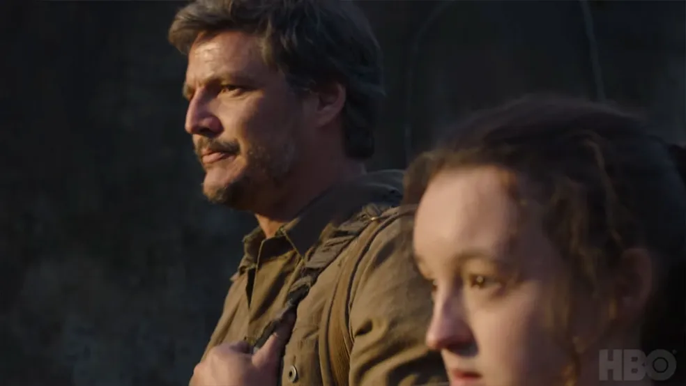

Adaptação da bem-sucedida franquia de PlayStation, The Last of Us enfim chegará ao HBO neste domingo, 15 de janeiro, após um longo tempo de espera.
Para celebrar, decidimos trazer um guia dos infectados pelo fungo Cordyceps, ameaças das quais Joel e Ellie precisarão lidar ao longo da trama.
Do que se trata a história da série/jogo?
The Last of Us acompanha um contrabandista chamado Joel (Pedro Pascal), que é contratado para levar Ellie (Bella Ramsey), uma menina de 14 anos de uma zona opressiva de quarentena, até um local seguro. O que começa como um trabalho qualquer logo se torna uma jornada brutal e comovente, pois ambos precisam atravessar os EUA e depender um do outro para sobreviver.
Estágio Um: Corredores (Dois dias - Duas Semanas)
Dois dias depois da infecção pelo Cordyceps, a vítima se torna aquilo conhecido como “Corredor”, com a pele pálida e coberta de lesões, além da queda de cabelo. Além disso, os olhos são os primeiros alvos do fungo, por isso não enxergam tão bem, mas mantêm a maioria de suas características humanas. Por exemplo, seus gemidos ainda são humanos, assim como sua aparência geral. Eles são notavelmente rápidos e ágeis.
Sua linguagem corporal é lenta e errática, sugerindo que estão resistindo à influência do fungo.
Alguns sobreviventes acreditam que a mente da pessoa ainda está intacta, mas presa em seu própriocorpo, como visto por um corredor que ficou angustiado/chorando depois de atacar e matar um de seusamigos. Às vezes, eles não atacam, mesmo quando indivíduos não infectados estão bem na frente deles.
Estágio Dois: Espreitadores/Perseguidores (Duas Semanas – Um Ano)
Espreitadores (ou Perseguidores) têm a visão e a velocidade dos Corredores, com a ferocidade dos Estaladores. Os traços físicos mais notáveis que definem esse estágio da infecção são os distintos ruídos, início de crescimentos fúngicos na cabeça e no rosto, geralmente deixando o hospedeiro com apenas um olho restante, desenvolvimento de ecolocalização e sua discrição ao detectar uma vítima à distância.
Quando isso acontece, eles se protegem, mostrando uma natureza ágil e furtiva, e eventualmente se aproximam de seu alvo. De perto, os Espreitadores são muito agressivos.
A transformação acontece entre duas semanas e um ano após a exposição ao fungo.
Estágio Três: Estaladores (Um Ano – Vários Anos)
Os Estaladores já parecem menos humanos do que Corredores e Espreitadores, com rostos completamente distorcidos e marcados por fungos desenvolvidos a partir de seus cérebros infectados, muitas vezes deixando para trás apenas um punhado de dentes irregulares.
Estaladores costumam coçar o crescimento fúngico em seus olhos como se estivessem tentando se livrar da cegueira, especialmente quando imóveis. Essa, inclusive, é sua principal fraqueza.
Ao mesmo tempo, são capazes de locomover utilizando a ecolocalização, que produz ruídos perceptíveis de clique.
Estaladores têm uma natureza muito mais perigosa e agressiva, e graças à força aumentada, podem dominar praticamente qualquer humano em combate.
A principal estratégia para neutralizá-los envolve furtividade, utilizando objetos do local para confundi-los. Ou então, caso o combate seja a única opção, tenha certeza que sua arma esteja carregada e seja de alto calibre.
Último Estágio: Baiacu/Verme (Vários Anos)
Baiacus (ou Vermes) levam vários anos para se desenvolver após a exposição ao fungo, e são incrivelmente fortes e fisicamente imponentes, cobertos por fungos espessos que efetivamente atuam como placas de armadura. Por causa dessa cobertura protetora, podem suportar uma grande quantidade de dano, incluindo tiros de espingarda ou rifle de caça, tornando-os extremamente difíceis de eliminar.
Trata-se do quarto (e último) estágio de infecção, considerado o mais raro e perigoso.
Os Baiacus são extremamente agressivos, mas bastante lentos e descoordenados, tornando-os mais previsíveis do que outros infectados. Quando agarra um sobrevivente, ele violentamente rasga sua mandíbula através da força bruta, agarra a cabeça do jogador e a esmaga, prende-o ao chão e golpeia seu corpo impiedosamente, ou agarra o pescoço do sobrevivente e o dobra para quebrar a coluna vertebral, matando-o instantaneamente.
Outro fator importante é que Baiacus arremessam sacos de micotoxina, que explodem no impacto, pulverizando seu alvo. Então, é recomendado evitar essas nuvens mortais.
Baiacus são vulneráveis ao fogo. Quando incendiado, eles vão se debater descontroladamente, tentando apagar as chamas, fazendo com que a pele fique carbonizada e quebradiça, tornando-os vulneráveis até mesmo a armas de baixa potência.
Ainda assim, são necessários múltiplos usos de armas como lança-chamas ou coquetéis molotov antes de matar um Baiacu, provando sua resistência impressionante.
Variante do Último Estágio: Trôpegos (Vários Anos)
Trôpegos são considerados variantes do quarto e último estágio de infecção. Acredita-se que tenham se desenvolvido a partir da exposição a grandes quantidades de água.
Considerados horripilantes, Trôpegos pulverizam ácido gasoso quando se aproximam da vítima. Geralmente, se se movem lentamente, mas são capazes de mudar para uma corrida em caso de alerta. Quando se sentem ameaçados, instintivamente disparam rajadas de seus esporos ácidos espalhados pelo corpo.
Quando derrotados, Trôpegos explodem com força violenta, emitindo uma nuvem de esporos que causam danos pesados.
É sugerido que Trôpegos estavam no processo de mutação para Baiacus, mas a forte exposição à água da chuva constante em Seattle fez com que se transformassem em algo diferente. No entanto, são encontrados em áreas longe da água, como nos subúrbios da cidade e nas áreas florestais.
Trôpegos sofrem altos danos causados por fogo e armas explosivas. Além disso, apesar da semelhança aos Baiacus em tamanho e aparência, parecem não ter a mesma forma imensa, já que Ellie e Abby são capazes de fugir quando agarradas.
São muito mais numerosos do que Baiacus, ocasionalmente aparecendo em grupos.
Anomalia: Rei dos Ratos
Apresentado em The Last of Us Parte II, Rei dos Ratos é considerado a maior anomalia do fungo Cordyceps, pois trata-se de um super-organismo composto por múltiplos Espreitadores, Estaladores e um Baiacu.
Sua força e resiliência são realmente incríveis, muito superiores ao Baiacu, tanto que destruiu grande parte dos níveis mais baixos do Hospital de Seattle. Depois de sofrer dano suficiente, alguns dos infectados entrelaçados podem se separar da massa maior.
Quando isso acontece, ele pode ter características compartilhadas com outros tipos de infectados.
Por exemplo, um infectado que se desprendeu se assemelhava a um Corredor em comportamento e aparência, mas foi capaz de jogar sacos de micotoxinas semelhantes aos Baiacus.
Cada infectado conectado à massa é sua própria entidade, em oposição à massa ser algo único.
Rei dos Ratos é composto por algumas das primeiras pessoas a serem infectadas pela infecção cerebral de Cordyceps em Seattle. Significa que acabou se desenvolvendo em quase trinta anos.
Trata-se do infectado mais forte conhecido, e por isso, Abby precisa utilizar todo seu arsenal de bombas, munição de lança-chamas e incendiárias para causar danos maciços durante a luta, dividida em três fases. Além disso, você também deve correr com frequência e manter distância.